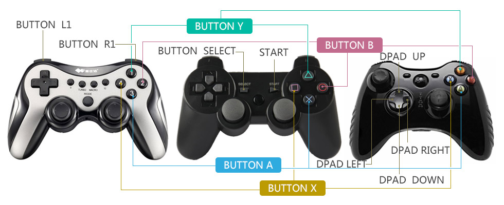

开发者在推出一款适配电视的游戏前需要考虑一个严峻的问题：用户手中有哪里设备——可以操控电视上的游戏？面对电视用户不可能再去触摸屏幕。只有通过远距离的控制器才能控制电视。我们认为这些控制器可以分为四类：
PC游戏开发者一般只需要考虑键盘鼠标的操控。手机游戏开发者一般只需要考虑触摸、体验操控。这几种操控方式都是标准、一致的：不论用户使用哪个牌子的键盘、鼠标、手机，开发者都只需要处理同一套事件。
但用户手中的电视控制设备是不可预测的。多数用户只有电视遥控器。玩家用户有比较大的可能拥有游戏手柄。部分用户有带鼠标功能的遥控器等其他操控设备。这些设备的按键数量、键码都不一致。不仅如此，同一类设备，在不同的盒子上也可能表现不同。
现在市场上有很多游戏手柄厂商，他们生产的手柄在外观和协议（按键事件）上均有不同。例如，一些手柄具有YBAX键，另一些手柄在相同位置绘制的是“△○×□”，或者“1234”。同一位置的键被按下时，系统上报的键码有可能相同，也有可能不同。比如Y键，多数手柄报告Button_Y事件。但有的手柄报告Y事件或Button_1事件（“1234”手柄）。
即使相同位置的键，上报的键码也可能不同，如L1键，多数手柄会报告Button_L1事件，但少数手柄会报告Button_5事件（如北通部分手柄）。
除了手柄的差异，设备之间对按键事件的处理也有差异。盒子或电视使用的修改过的Android系统可能修改了底层的按键映射表。比如，一些盒子在B键被按下后，会上报Button_B事件。同时会上报Back事件（导致界面返回）或Dpad_center事件。这些情况在我们的测试研究中发生频繁。由于触发的第二个事件不是标准的，因此是难以预测的。
上述几类问题大幅增加了开发一款普遍适配的电视游戏的难度：
一个电视游戏到了用户手里，先不论体验如何，首先要先“能”玩。如果游戏只支持游戏手柄或鼠标，或只支持某种型号的游戏手柄，则从一开始就大大限定了用户群。
我们认为理想的情况应该是：
考虑前面列出的常见问题，我想各位开发者已经可以感受到：自己去做所有这些适配工作几乎是不可能完成的任务。需要耗费大量的财力（买各种设备、手柄）人力（做仔细的测试）。更重要的是，这种方式不能“适应未来”。即未来不断会有新设备出现，开发商只能一直维护一个团队，才能保证游戏在新设备下可玩。
小葱游戏团队是国内最早介入（Android）电视游戏行业的团队。我们不仅有理论，更有丰富的实践经验。经过几年的开发运营，我们掌握了电视游戏大量的规律、最佳实践、trouble-shooting；我们拥有丰富的适配经验。在此基础上，我们设计出一套解决电视游戏操控碎片化问题的方案。
该方案有两大核心：标准化和云配置。
标准化指的是，我们抛开各种设备的差异，提出一种能够尽量多的兼容设备的事件标准。SDK会对底层事件进行监听、过滤、转换。使得不论使用何种游戏手柄，游戏总能收到一套标准的事件。
没有一套万能的转换逻辑，因为怪异的设备层出不穷。针对特殊设备的配置是难免的。为此我们保持对市场关注，不断更新维护最新的设备配置，上传到云端。接入我们SDK的游戏可以从云端获取最新的配置。
SDK目前只支持Android API 16+。
SDK的使用非常简单。它遵循Android标准的事件流，没有学习一套新按键事件标准的成本。对原有代码的侵入非常低。开发者甚至可以在不改动原有逻辑的情况下完成适配。
首先将SDK的jar包放入工程：将 control-sdk.jar 放入游戏工程的 libs 目录。
SDK的核心类是tv.xiaocong.sdk.control.ControlManager。这个类负责加载配置、过滤事件。这个类需要被实例化、初始化。初始化成功后，将通过ControlManagerInitCallback回调接口通知初始化成功，按键过滤、转换已就绪。
相比与其他操控类的SDK，小葱操控SDK对代码的侵入是比较小的。游戏核心代码（多数使用其他语言、游戏引擎编写）一般不需要改动。只需要改动最外层的Activity。因此集成是非常容易的。
下面通过Demo工程介绍SDK的使用。
1、参考 tv.xiaocong.sdk.control.demo.SdkDemoActivity 配置你的 Activity。
public class SdkDemoActivity extends Activity implements ControlManagerInitCallback {
...
2、实例化controlManager：
private ControlManager controlManager = new ControlManager(this, this);
ControlManager的第一个参数是Activity，第二个参数是ControlManagerInitCallback接口实现：
tv.xiaocong.sdk.control.ControlManager.ControlManager(Activity, ControlManagerInitCallback)
3、可以在一个合适的时机调用初始化方法，一般在onCreate()中：
@Override
protected void onCreate(Bundle savedInstanceState) {
...
controlManager.init();
}
4、实现ControlManagerInitCallback接口的doneInitControlManager(success)方法。方法只有一个参数，表示初始化是否成功。初始化失败最主要的原因是：未能加载到用户设备的配置文件。
doneInitControlManager(success)会在UI线程被调用。
@Override
public void doneInitControlManager(boolean success) {
if (success) {
Toast.makeText(this, "加载手柄配置文件完成", Toast.LENGTH_SHORT).show();
} else {
Toast.makeText(this, "加载手柄配置文件失败！！", Toast.LENGTH_SHORT).show();
}
}
游戏开始时一般会有一个启动画面。游戏进行资源加载。可以将SDK的初始化算作启动加载项目之一。通过doneInitControlManager(success)方法监听加载完成事件，关闭启动屏，进入游戏。
5、重写android.app.Activity.dispatchKeyEvent(KeyEvent)方法。多数情况下，重写后的方法只需要做一件事：判断controlManager.dispatchKeyEvent()方法返回值是否为true，若为true，返回true（表示过滤掉此事件）；否则让事件放行：
@Override
public boolean dispatchKeyEvent(KeyEvent event) {
if (controlManager.dispatchKeyEvent(event, this)) {
return true;
} else {
return super.dispatchKeyEvent(event);
}
}
前面介绍过，可以操控电视的设备差异化是非常大的，比如从大类上分电视遥控器、游戏手柄、键盘。虽说标准化有好处，把这些设备强制统一成一种，既不现实也会限制更高级设备的功能。因此我们将设备分类对待。
操控设备分三个类：电视遥控器、游戏手柄、键盘。同一类下的设备具有相同的按键标准。不同类的设备的按钮标准今可能做到超集、子集的关系。
电视遥控器分两个亚类：Mini和Complex。
Mini指没有上下左右确定、菜单、返回、音量键的小遥控器。如小米的、天猫的。Complex指有更多的按键。
下图是Mini遥控器标准的按键事件。我们标准化的按键共有9个。其他按键，由于某些主要设备上不存在，故不做标准化处理。
| 键 | 事件 |
|---|---|
| 向上 | DPAD_UP |
| 向下 | DPAD_DOWN |
| 向左 | DPAD_LEFT |
| 向右 | DPAD_RIGHT |
| 中心（确认） | DPAD_CENTER |
| 菜单 | MENU |
| 返回 | BACK |
| 音量加 | VOLUMN_UP |
| 音量减 | VOLUMN_DOWN |
小葱如意棒是小葱游戏专门推出的针对电视游戏和娱乐的操控设备。它具有鼠标、按键、体感功能。
玩游戏时，小葱如意棒一般是横握，按键映射如下图所示：

游戏手柄看似差异大，但统一起来还是较容易的。

L2/R2的支持没有L1/R1支持好。很多盒子上识别不出这两个键。
| 键 | 事件 |
|---|---|
| 向上 | DPAD_UP |
| 向下 | DPAD_DOWN |
| 向左 | DPAD_LEFT |
| 向右 | DPAD_RIGHT |
| Y | BUTTON_Y |
| B | BUTTON_B |
| A | BUTTON_A |
| X | BUTTON_X |
| L1 | BUTTON_L1 |
| R1 | BUTTON_R1 |
| L2 | BUTTON_L2 |
| R2 | BUTTON_R2 |
| 选择 | BUTTON_SELECT |
| 开始 | BUTTON_START |
键盘事件还是很标准的。现阶段暂时不需要做什么标准化。